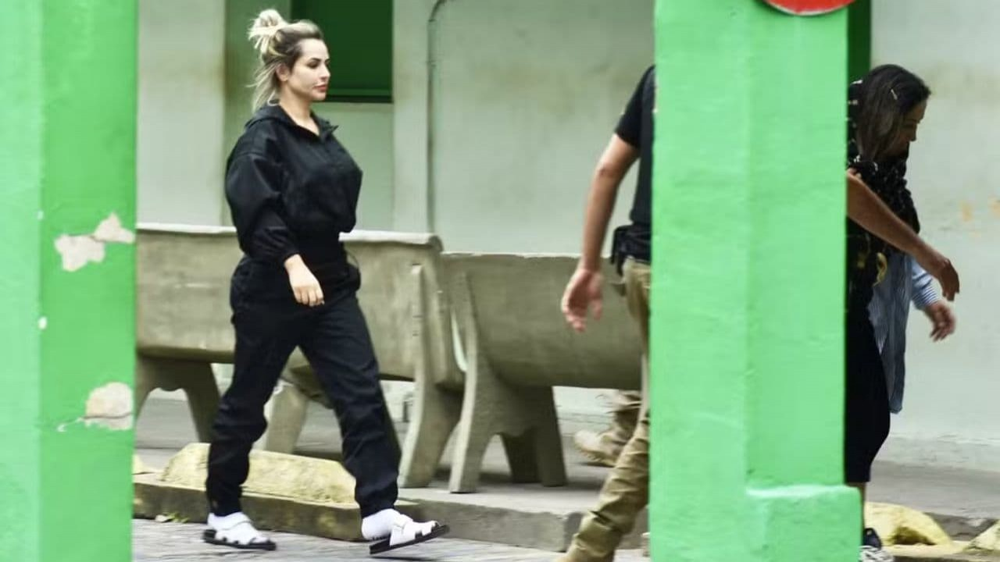

REPORTAGEM ESPECIAL: Ascensão, Luxo e Cárcere – O Novo Capítulo no Caso Deolane Bezerra

REPORTAGEM ESPECIAL: Ascensão, Luxo e Cárcere – O Novo Capítulo no Caso Deolane Bezerra
A advogada e influenciadora digital Deolane Bezerra foi presa preventivamente em sua mansão em Alphaville, Barueri (SP), sob a acusação de atuar como "caixa" e operadora de lavagem de dinheiro para o Primeiro Comando da Capital (PCC). A prisão, efetuada no final de maio de 2026, marca o desdobramento mais severo das investigações da Polícia Civil e do Ministério Público de São Paulo contra a celebridade da internet.
🚨 A Prisão e o Monitoramento da Interpol
Deolane Bezerra, de 38 anos, vinha sendo monitorada de perto pelas autoridades brasileiras com o auxílio da Interpol durante suas viagens internacionais. Em abril de 2026, a influenciadora esteve hospedada em um apartamento de luxo próximo à Piazza di Spagna, em Roma, com diárias superiores a R$ 10.000.
Apenas um dia após retornar ao Brasil, os policiais cumpriram o mandado judicial entrando por uma das janelas de seu imóvel. A influenciadora foi surpreendida de pijama em seu quarto. Na mesma operação, carros de luxo pertencentes à advogada foram apreendidos.
💰 As Cifras da Investigação: R$ 140 Milhões Movimentados
De acordo com o promotor do Ministério Público, Lincoln Gakiya, as contas bancárias pessoais e das empresas da advogada movimentaram R$ 140 milhões em apenas dois anos. As investigações apontam para práticas financeiras suspeitas:
"Smurfing": O recebimento de depósitos fracionados abaixo de R$ 10 mil para burlar os mecanismos de rastreamento do Coaf.
Ocultação de Bens: Suspeita de camuflar recursos pertencentes à cúpula da facção criminosa, incluindo os líderes "Marcola" e "Marcolinha".
Uso de Audiência: A polícia aponta que a expressiva marca de mais de 21 milhões de seguidores servia para mascarar o enriquecimento ilícito como lucros de publicidade.
⚖️ A Defesa no Cárcere: "Não sou bandida"
Atualmente detida na Penitenciária Feminina de Tupi Paulista, no interior de São Paulo, Deolane optou pelo silêncio em seus últimos depoimentos após reclamar que não havia sido ouvida previamente. A Justiça paulista negou os primeiros pedidos de habeas corpus feitos por seus advogados.
Por meio de uma carta manuscrita divulgada por suas irmãs, a influenciadora defendeu sua inocência de forma enfática:
"Não sou, e nunca fui, bandida. Sou mãe, empresária e advogada — uma nordestina que venceu na vida com o próprio suor", declarou Record R7.
A defesa alega que os valores questionados correspondem estritamente a honorários advocatícios declarados e legítimos por serviços prestados.
📈 Do Estouro na Web ao Centro dos Tribunais
Ela ganhou projeção nacional em maio de 2021, logo após a trágica morte de seu então companheiro, o funkeiro MC Kevin. Desde então, construiu um império digital baseado na ostentação, na advocacia criminalista e em publicidades de jogos de apostas virtuais. Esta não é a primeira vez que a mesma enfrenta problemas com a justiça criminal, mas o cerco atual das autoridades de São Paulo é o maior desafio jurídico e reputacional de sua carreira.
Fonte: CNN Brasil https://share.google/EBMw1q0E1oQpH9FhK
Fonte: Instagram https://share.google/wCWGG4cGpNspzYBhy
Fonte: Instagram https://share.google/PiAUpzCOK46jZaHtE
Fonte: www.band.com.br https://share.google/xNdmGyqjl0vreFMNB
Feito por: @Li_yamauti